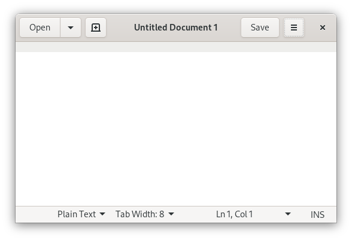

A brief introduction to gedit
gedit is an easy-to-use and general-purpose text editor. Its development started in 1998, at the beginnings of the GNOME project, with a good integration with that desktop environment.
You can use it to write simple notes and documents, or you can enable more advanced features that are useful for software development.

Once gedit launches, you can start writing right away. To save your text, just click the Save button in the gedit header bar.